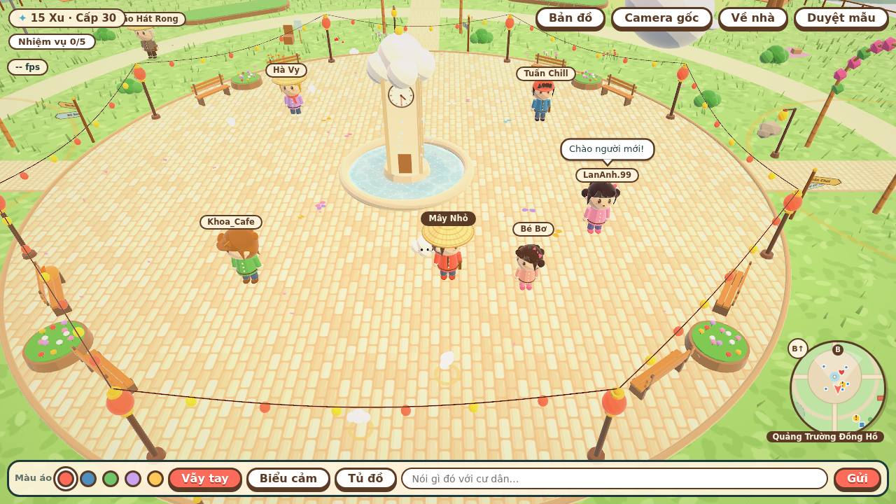
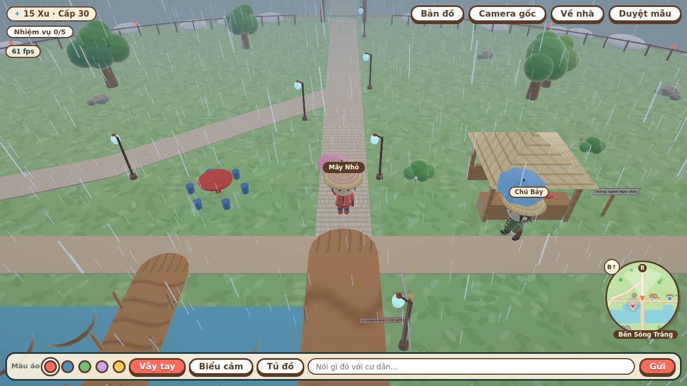
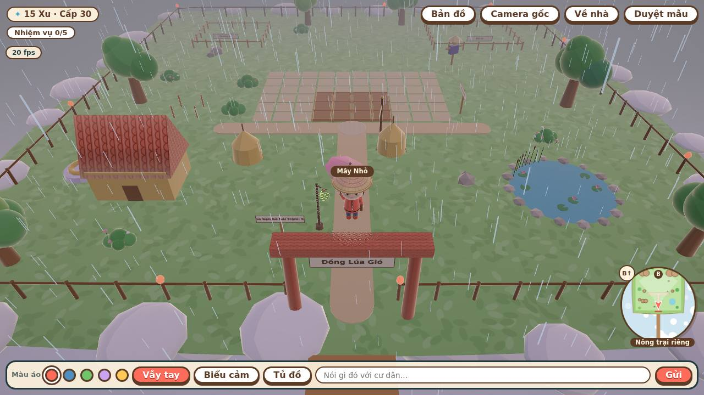
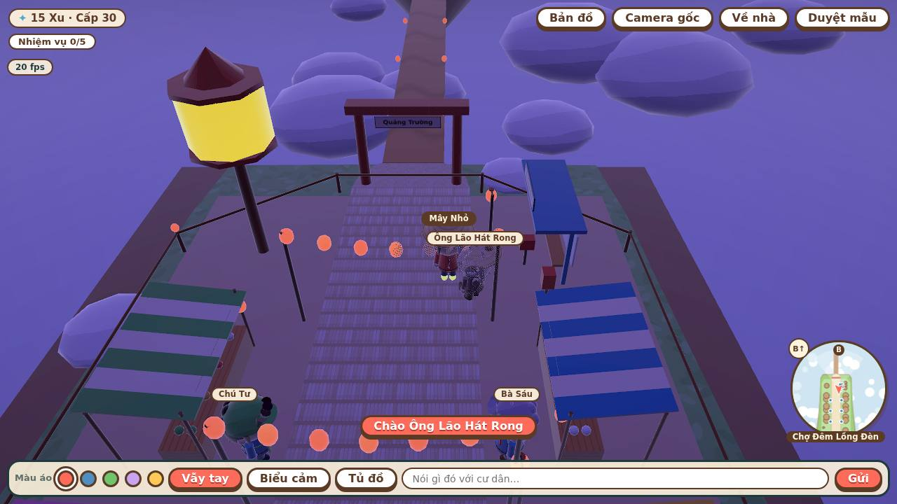
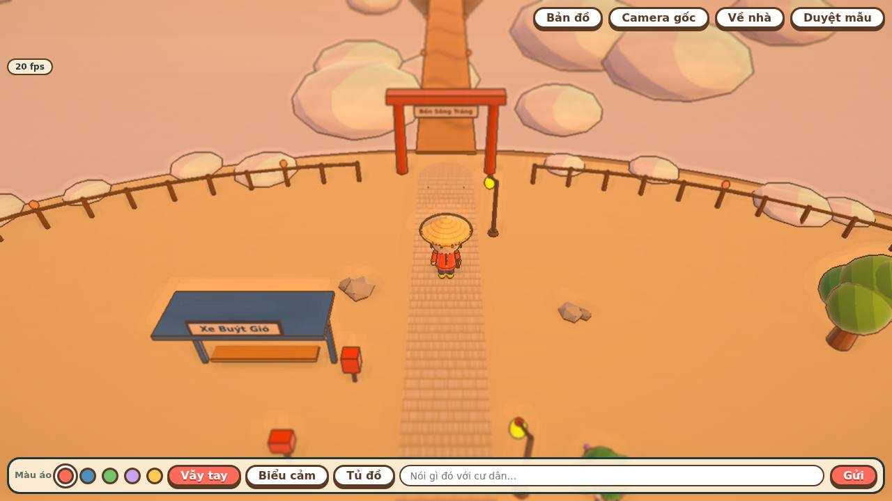
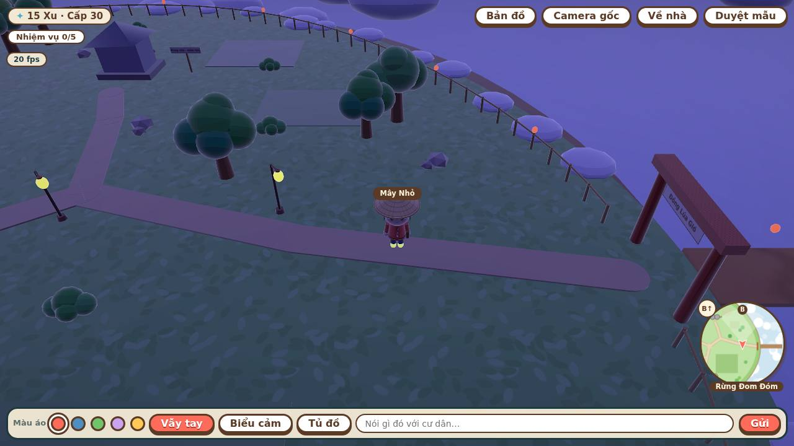
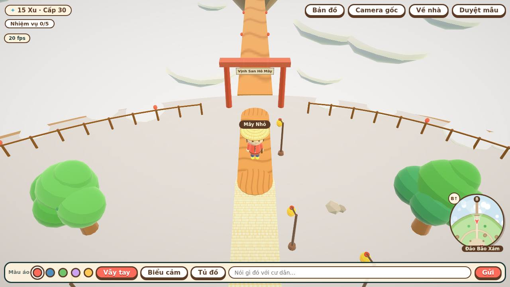

Tổng kết tuần 3D · 28/09 – 04/10/2026
Phố Mây, bản mẫu 3D prototype/mau-3d.html · repo ntruong2/pho-may · chơi thử: ntruong2.github.io/pho-may-web · trang tổng kết đầu tiên (commit "[3D-TK]", mục 15 tài liệu bản đồ 3D).
207commit trong tuần
Q31 → Q194dòng quyết định mới (mục 1)
19file dữ liệu khu
data/khu/196mục kiểm tra tự động (3 khung màn hình)
776 KBbản mẫu một file
Ảnh chụp bản mẫu
Chụp bằng node tools/test-3d/anh-tuan.mjs 2026-10-05 (máy chủ vẽ bằng CPU, 1280 × 720).







Đã làm trong tuần
- Bản đồ và khu (3D-10 → 3D-22, 3D-29 → 3D-32): Quảng Trường, Đồng Lúa Gió, Nông trại riêng, Sân Chơi Cầu Vồng, Bến Sông Trăng, Chợ Đêm, Hẻm Đèn Dầu, Khu Nhà Mái Ngói và các phòng trong, Vịnh San Hô, Rừng Đom Đóm, Đỉnh Đèo Sương, Đảo Bão Xám; mỗi khu dựng từ file dữ liệu và có mockup kiểm tra. Chuyển khu, Xe Buýt Gió, bản đồ lớn, camera xoay, mép đảo, lịch NPC theo giờ và khi mưa.
- Chương truyện (3D-23): Chương 1 tìm Linh Mây; các khu chương 3–5 mở theo cấp.
- Nghề (3D-25 → 3D-28): bảng nghề, đồng phục, Bảng Đơn Nhờ, nghề ngoài luồng (Dân Phòng, tuần tra, kiểm lâm, Điểm Tai Tiếng), nghề mới theo mốc cấp.
- Nông trại và nuôi thú: 15 loại cây (thanh long nở đêm, sen trong ao, cà phê, Trái Sao), Cây Khổng Lồ, bù nhìn, nuôi tằm, ong, gà mây; xay lúa, bếp và quầy pha chế.
- Câu cá: 28 loài theo nơi, giờ, thời tiết (đủ bảng GDD §9.2), mồi câu, Bách Khoa Cá, Giải Câu Cá Cuối Tuần, Bể cá Legendary.
- Thời trang và nhà: Tủ Đồ 5 bộ phối, bộ có hiệu ứng, nhuộm, áo dài lụa sen, Tủ Hoài Niệm, mục Giày mới; nội thất, Điểm Ấm Cúng.
- Minigame và sự kiện: Kéo Co, Ô Ăn Quan, Nhảy Sạp, Trốn Tìm Lồng Đèn, Đua Thúng…; Trung Thu, Tết, Giáng Sinh Tuyết Mây, Mùa Nước Nổi, Sinh Nhật, nhiệm vụ ngày, tuần, đơn hàng.
- Thời tiết (cuối tuần, Q184 → Q194): cá mưa, Giông và Cá Sấm Sét, mưa tự tưới, sấm chớp ban ngày, 5 loài cá còn thiếu, cầu vồng Vé Vui ×1,5, nắng gắt cây nhiệt đới +10% và đồ uống ×1,5, mưa phùn đèn bật sớm, chợ sáng +10%, giày phản quang, filter vàng hoàng hôn.
- Hiệu năng (3D-24): gộp lưới tĩnh, gộp nhân vật thành lưới da, cỏ có LOD; Quảng Trường bản Đẹp từ 467 nghìn xuống 397 nghìn tam giác.
Còn lại và việc tuần sau
| Việc | Tình trạng |
|---|---|
| Phần cần máy chủ | Hái trộm vườn bạn, chợ người chơi, bạn bè và Tri Kỷ, party, guild, Cá Voi Mây Con hợp tác, bảng xếp hạng: chờ máy chủ thật (ngoài phạm vi tự làm). |
| 3D-24 hiệu năng | Cần đo trên điện thoại thật; máy kiểm tra chỉ vẽ bằng CPU. |
| Việc chơi một mình trong GDD | Tiếp tục rà: tạo nhân vật (§5: màu da, má hồng, tàn nhang), nhiệm vụ mẫu §14, sự kiện §18, giữ chân §21. |